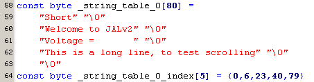

April 2006
Strings in JAL
String elements
Use of strings
Constant Strings
The constant string definition can be handy if some string is just used once in the program. If a string is needed more than once, a string table is far more efficient. The use of the constant string is quit limited at the moment. The string is defined by
Now as it's not possible to use the string as a parameter in a procedure call, every time the string is needed the full code must be written in-line, so for writing the constant string to the serial port the following code could used.
A problem may arise, because it might be unknown here if the loop variable "i" here already exists or not.
In JALcc there's a macro to write the definition and use of a constant string just in 1 line
which will expand into normal JAL like this:
As for the moment I doubt if this best expansion, I've implemented 2 methodes, the loop method above and the inline method. So there are 3 different macro calls:
At this moment the "Write_String" macro is attached to the Asloop macro shown above. The Inline macro will expand into normal JAL like this:
Both methods supports the special characters, defined in JAL and shown in the table below, except the hexadecimal value.
Constant String Table
In JAL you can define constant stringtables, with a maximum length of 255. Unfortunatly creating a stringtable is a very hard job, because you have to define the stringtable as an array of characters.
In JALcc there are macros to generate stringtables in an easy way:
which expands in JAL to (and now you understand why it's a hard job)

The macro generation in JALcc does a view more nice things:
These strings can be accessed by some procedures in the library Strings (ID=24), like this
As the above example uses the fast lookup, which needs absolute indices of each string (automatically created by the JALcc macro), there is also a slow routine which doesn't need these indices:
Variable Strings
...
Find String in a Table
... sorted on length ... or ... sorted on alfabet ??/